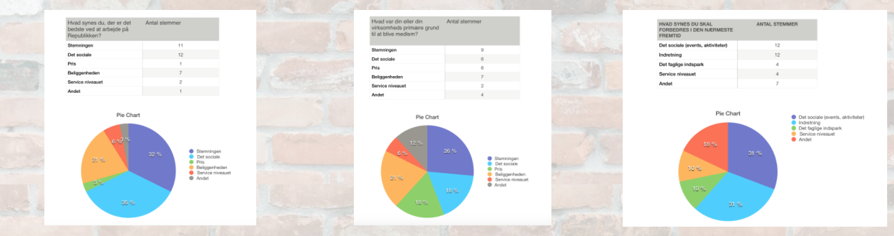

I denne opgave havde vi fået en rigtig kunde, et socialt kontorfællesskab ved navn Republikken. Republikkens problemstilling var… Hvordan kan Republikken styrke interaktionen mellem medlemmer gennem en ny app. Denne gang fik vi udleveret brugerundersøgelser som vi kunne hive data ud fra. Vi havde prøvet processen før, så nu skulle vi bare planlægge og gang i en fart.
Ud fra den meningsmåling vi fik fra Republikkens medlemmer kunne vi konkludere følgende: At stemningen og det sociale var de to primær grund til folk valgt at blive medlem hos Republikken frem for alternativer. Og over 60% af medlemmerne synes det bedste ved arbejde på Republikken var stemningen og det sociale. Dog følte 31% af medlemmerne stadig der var plads til forbedring med det sociale, herunder events og aktiviteter de savnede.
 Meningsmålinger fra Republikken
Beskrivelse af Appen
Come Together er tænkt som en begivenhedskalender hvor man kan ryste folk sammen på kryds og tværs i kontorfællesskabet Republikken.
Som bruger har man muligheden for at deltage, i større events og foredrag arrangeret af Republikken. (eksempel. Laser cutter course)
Man har også muligheden for at deltage i små creative events (evt. ugelige), der kan skabe et pusterum i dagligdagen. Disse events varer oftest mellem 15 - 30 min. Det kunne f.eks. være et Waffle Pitch, hvor man både kan få luftet sine tanker omkring sit projekt eller udveksle ideer, over en omgang vafler eller en kop kaffe.
En anden mulighed er, at alle bruger har mulighed for at oprette et event til kalenderen, hvor man kan indsætte et billede og en kort beskrivelse. Det er med til at skabe engagement i fællesskabet og give plads til at sætte et socialt eller fagligt præg på hverdagen i Republikken.
App’en er med til at styrke det sociale, kreative og faglige. Det skaber en hverdagskommunikation med fælles interesser og samlepunkter på adressen. (Det skal blive meget mere end et event. Nærmest tradition) Man møder sine kollegaer på et social og fagligt plan hvor man kan bruge hinandens tanker, ideer og ressourcer.